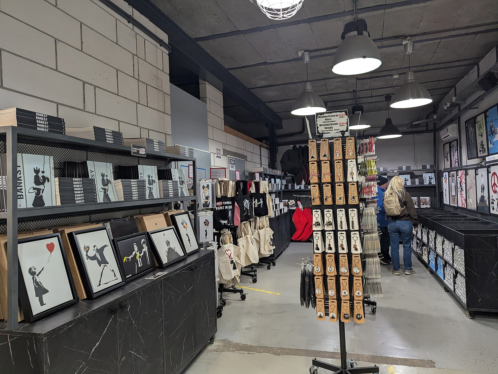
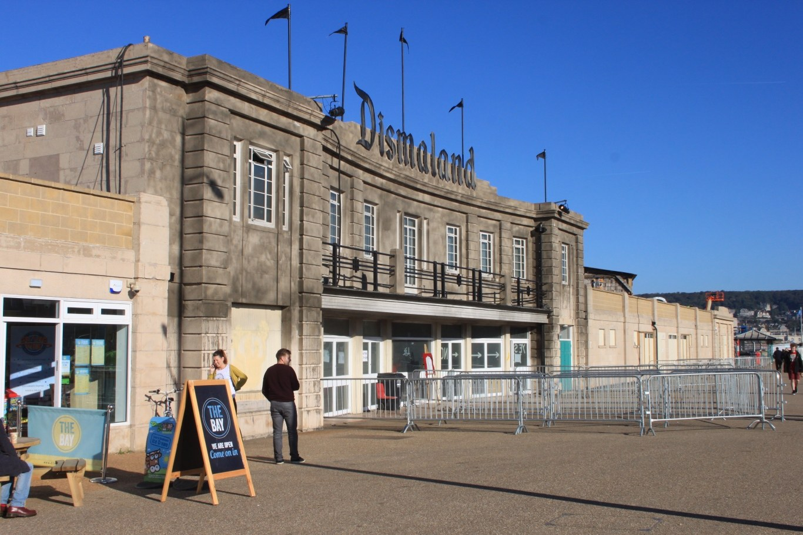
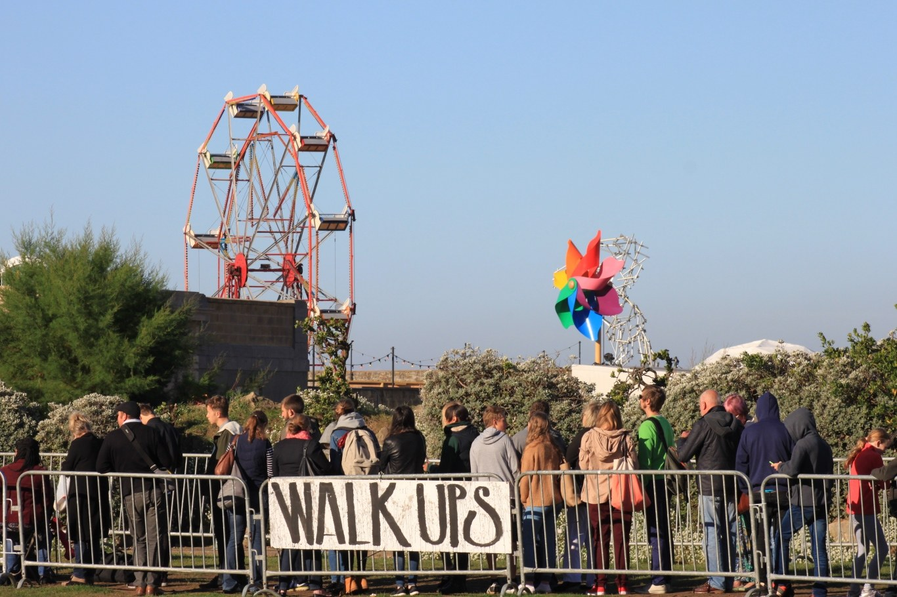

Anglais · Seconde bac pro · A2 and B1 · Lesson 6 of 6
Lesson 6. Exhibiting Banksy without owning the name
Question of the day: How can a mediator present a visual slogan without overstating evidence or erasing the street?
For the teacher: timing (52 minutes)
| Time | Activity |
|---|---|
| 00 to 05 | Vocabulary retrieval and a quick language correction |
| 05 to 10 | Read the final brief and the criteria |
| 10 to 25 | Individual written assessment: label and recommendation |
| 25 to 40 | Paired oral assessment, recorded when possible |
| 40 to 44 | Self-assessment and an improved sentence |
| 44 to 49 | Written record of the ethical principle, and flashcards |
| 49 to 52 | Individual oral exit and homework for revision |
Checkpoint at minute 44. Every student has completed a written response and both oral components (continuous speaking and interaction).
Eight-minute essential closing route (replaces the last eight minutes if the class needs more time; it does not add time): 44 to 46: identify one error from the grid. 46 to 49: produce and say an improved version. 49 to 51: record the final ethical principle. 51 to 52: note revision homework.
If thirty individual presentations cannot be assessed live in fifteen minutes, students record in pairs on school-approved equipment and submit the recording privately. The teacher assesses the recordings after class. If recording is unavailable, written work is collected in this lesson and additional oral time is scheduled. Do not pretend that a single teacher can hear thirty full performances in a quarter of an hour.
The final brief
Your class is a cultural mediation team advising a local exhibition entitled Banksy: Public Walls, Private Names. The organisers want to show photographs of murals, and to discuss a fictional proposal: a mural on a privately owned warehouse would be removed and shown indoors. Look first at how a slogan changes when it enters an exhibition, a shop, or a queue of visitors.





The Amsterdam wall shows WHAT ARE YOU LOOKING AT? as an exhibition display, not as the original street work of Lesson 1. The stencil near Big Ben says This is not a photo opportunity, on a tourist site. The Krakow shop sells framed prints of famous motifs. Dismaland's facade and queues show how a public is invited to visit. Before you write a label, say what each of these images "says" about looking, visiting and selling.
Each student must:
- Present one artwork from the sequence first as a visual slogan (what it says, to whom, in what tone, and with which devices), then give the place, the date, what is visible, and why the location is part of the sentence.
- Distinguish a documented event from an attributed identity claim. The civil name, if you mention it, stays a claim, with its source.
- Recommend what should happen to the fictional warehouse mural, with a reason.
- Answer a visitor's question (your partner asks it).
- Write a short ethical exhibition label, and a short recommendation.
Nobody is asked to discover a private address, to identify relatives, to contact a suspected artist, or to investigate a private person.
Step 1. Expanding your vocabulary, last review
| Word or phrase | Meaning | Example |
|---|---|---|
| exhibition label | a short text that helps a visitor understand a displayed work | The label must be accurate and modest. |
| to acknowledge | to recognise or to state something openly | The label should acknowledge that the name is a press claim. |
| to qualify | to limit a claim so that it stays accurate | Qualify the headline with according to. |
| to recommend | to propose a course of action | We recommend keeping a photograph in the street and a copy in the room. |
| to consult | to ask for another person's view or for a source | The organisers should consult the wall's owner and the neighbourhood. |
| mediator | a person who helps the public meet a work or an idea | A mediator explains, and does not overstate. |
| ethical | concerned with what is right to do | An ethical label does not pretend we know more than we do. |
Exercise 1. Repair these labels. They are too sure, or they mix categories. Rewrite each one.
- "This mural was painted by Robin Gunningham in 2022."
- "Banksy wants all his works to stay in the street, so selling them is illegal."
- "This photograph is free to use because it is on the internet, and so is the artwork."
- "The High Court decided that the public owns every Banksy mural."
Corrigé
Example rewrites. 1. A mural widely attributed to Banksy, 2022. Reuters reported in March 2026 that Banksy was born Robin Gunningham. Banksy has not confirmed that identification in the sources used for this exhibition. (Better: do not put the civil name in the visitor's first sentence at all.) 2. We do not know a single intention for every work. Some street pieces have been removed and sold; Pest Control does not treat that as a normal way to obtain a certificate. The law depends on the case. 3. A photograph may have a Creative Commons licence. The artwork itself remains protected. 4. In 2015, in a particular case about Art Buff, the High Court ordered the return of a physical section of wall. It did not decide that the public owns every mural.
Step 2. Written assessment (15 minutes)
You work alone. You may use your observation card from Lesson 5, and the classroom sentence about Reuters from Lesson 2. You may not search the web for a private name.
A2 pathway
A2 written task /20.
- Write an exhibition label of four to six short sentences for one work: the slogan sentence (what it says, to whom, in what tone), what we can see, where it was, why the place matters, and one accurate sentence about identity (you may write that the artist's civil name is not confirmed).
- Write three sentences recommending what should happen to the fictional warehouse mural, with should and because.
B1 pathway
B1 written task /20.
- Write an exhibition label of eight to ten sentences: the work as a visual slogan (what it says, to whom, in what tone, and which devices), description, location, one documented event, one attributed claim clearly marked as a claim, and a sentence about photographic licences and remaining rights in the artwork.
- Write a short professional recommendation (90 to 120 words) on the fictional warehouse mural, using the three-rights distinction and a conditional. Qualify anything that is not a fact.
A2 written grid /20
| Criterion | 0 to 3 | 4 to 6 | 7 |
|---|---|---|---|
| Réalisation de la tâche: label (slogan, work, place, what is visible) | Incomplete or confused | The work and the place are identified, with some description | Clear description, and the place is given a simple role |
| Identity and accuracy | A civil name is presented as a fact, or the issue is ignored in a misleading way | The text avoids a false certainty | An accurate cautious sentence, with or without a named source |
| Recommendation | No clear advice | A recommendation with a simple reason | A clear should, with because, that a visitor can follow |
Plus 0 to 6 for language (vocabulary from the sequence, and intelligible syntax), adjusted so that the total is /20. The teacher records the language mark in the same spirit as the oral grids: 0 to 2 limited, 3 to 4 adequate reuse, 5 to 6 secure reuse of there is, may, should, according to.
B1 written grid /20
| Criterion | 0 to 3 | 4 to 6 | 7 |
|---|---|---|---|
| Label: description, place, rights | Incomplete, or categories mixed | Solid description and location, some caution | Description, location, and a clear note on photographs and remaining rights |
| Attribution and identity | A claim is treated as a fact | A source is named, with a small slip | Documented events and claims are kept apart; no civil name as fact |
| Recommendation | No usable advice | A reasoned recommendation | Three rights, a conditional, a qualified professional tone |
Plus 0 to 6 for language, as above, with expected control of although, whereas, the passive, and accurate attribution.
Step 3. Oral assessment (about 15 minutes, in simultaneous pairs)
A2 pathway
A2 oral, /20. Continuous speaking, 40 to 50 seconds: present your work as a visual slogan (what it says, to whom, in what tone), then what you can see, where it is, and why the place matters. Interaction, about 40 seconds: your partner is a visitor and asks one of these questions: "Who is Banksy, really?" or "Can we just cut this wall and show it here?" You answer without presenting a civil name as a fact, and you give a simple recommendation.
B1 pathway
B1 oral, /20. Continuous speaking, about 90 seconds: present your work as a visual slogan (what it says, to whom, in what tone, and with which devices), explain the role of the site, and include one documented fact and one attributed claim, clearly distinguished. Interaction, about one minute: your partner plays a visitor who wants a sure name and a sure legal answer. You qualify, you attribute, and you recommend. You respond to a follow-up objection.
A2 oral grid, summative /20
| Criterion | 0 to 2 | 3 to 4 | 5 |
|---|---|---|---|
| Production orale en continu: the slogan, the work and the place | Too little, or the work is not identified | A description, with a simple mention of place | Visible details, the place, and a reason why the place matters |
| Identity and honesty | A civil name is given as a fact | The student avoids a false certainty | A clear cautious formulation, if the question arises |
| Language | Little language from the sequence | Frames are used, with some errors that do not block meaning | Vocabulary reused; there is, may, should, according to used intelligibly |
| Interaction | The question is not really answered | A relevant short answer | A clear answer to the visitor, with a recommendation |
B1 oral grid, summative /20
| Criterion | 0 to 2 | 3 to 4 | 5 |
|---|---|---|---|
| Production orale en continu: slogan, work, site, evidence | Incomplete | A connected presentation, with some distinction of categories | A clear presentation; fact and claim are kept apart; the site has a role |
| Ethics of the name and of the wall | Overstatement, or no recommendation | A cautious position, with a reason | Accurate attribution, a qualified recommendation, no investigation of a private person |
| Language | Limited control | Sequence language attempted, with slips | Secure reuse; qualification (according to, may, although); intelligible syntax |
| Interaction | Little response to the visitor | A relevant reply | The objection is taken up; the answer stays accurate and professional |
Step 4. Self-correction
Using the teacher's grid (A2 or B1), write:
- The criterion I missed, or the one I only partly reached.
- What went wrong, in my own words.
- An improved version of one spoken sentence and one written sentence, following that criterion.
The improved version is part of the assessment, not an optional extra.
Step 5. Final written record
Copy and keep this principle, then complete it in your own words:
A mural on a wall can have an author without a confirmed civil identity. A press investigation can be serious and still remain a claim until it is confirmed. Owning a wall is not the same as owning every right in the image, and it is not the same as public access. As a mediator, I should... I should not...
Step 6. Homework
Revise your flashcards from the six lessons. A2: be ready to present your work again in 40 seconds, with the improved sentence included. B1: polish your exhibition label and be ready to read it aloud. This work trains Situation B (continuous speaking and interaction) and the expression écrite of Situation A. It can be reused later in CCF practice, if the teacher so decides. It is not, by itself, the examination. The CCF takes place in the last year of the cycle; this is Seconde.